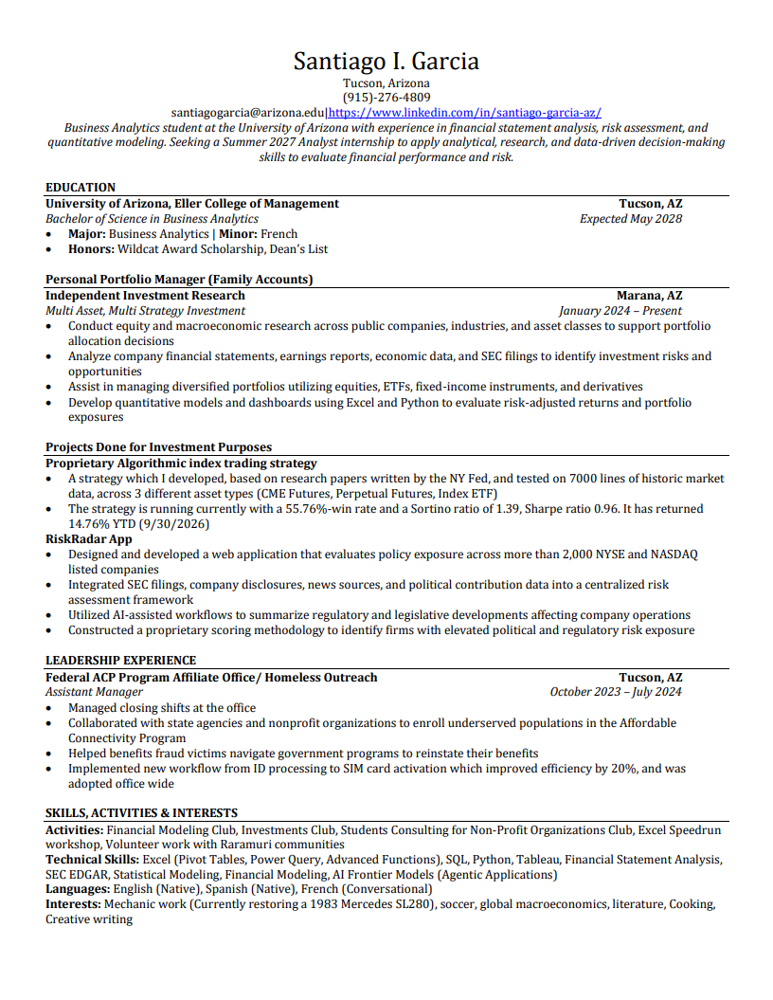

About
I grew up with an intense curiosity for engineering and mechanical systems. That couriosity led me to a deep interest in financial markets and analytics, where i realized that finidng the path of highest returns was another chance to tinker and problem solve . At the U of A I saw
Business Analytics as a way to combine my interests in business and problem-solving.
As i've grown older, I have began to realize what drives me. Initially, I though I was very outcome driven. I saw myself as someone who was not to vigilant of processes,
but I now realize that processes and systems are what interest me most about problem solving. To the point that I would rather "take the scenic route" when solving problems on my own.
Resume

Projects
RiskRadar
A personal use web application for tracking policy risk exposure to over 2,000 equities listed on the NYSE & NASDAQ. The app uses multipe api connections to compile a news feed, that is used along side SEC filings and public political connections to score each equity on a risk scale. The app is built with python (flask). https://github.com/SantiagoGarcia36/RsikRadarV1.3
Client Intake Site
A simple website I made for my friends construction company to collect leads. The website uses Python Flask and SQLite to store client contact infomation. I used SQLite to create the client data tables. The website then uses an Excel to SQL connection to store the client information to a shared spreadsheet for the comapanies users. https://github.com/SantiagoGarcia36/JCLights-website
Experience

Skills
- Languages (Computers)
- Python, Java, SQL
- Analytics
- Excel, Tableau, Power BI, Financial Analytics, Equity Fundamental Analysis
- Tools
- Pitchbook, SEC Edgar Database, VS Code, DataBento
- Languages (Human)
- English, Spanish, French
Contact
I’m open to internships, research positions, and collaborations. Email is the best way to reach me.
santiagogarcia@arizona.edu